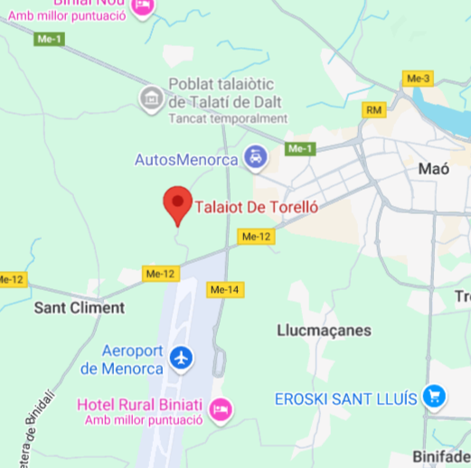

Descripció
Talaiot de Torelló es tracta d'un poblat talaiòtic dels més extensons de Maó, tot i que no es pot apreciar en el seu conjunt, ja que va resultar molt danyat pels treballs agrícoles i la construcció de la capçalera nord de l'aeroport entre els anys cinquanta i seixanta del segle xx.
Ubicació
Talaiot de Torelló es troba al municipi de Maó (Menorca) i fou declarat Bé d'Interès Cultural.

Imatges